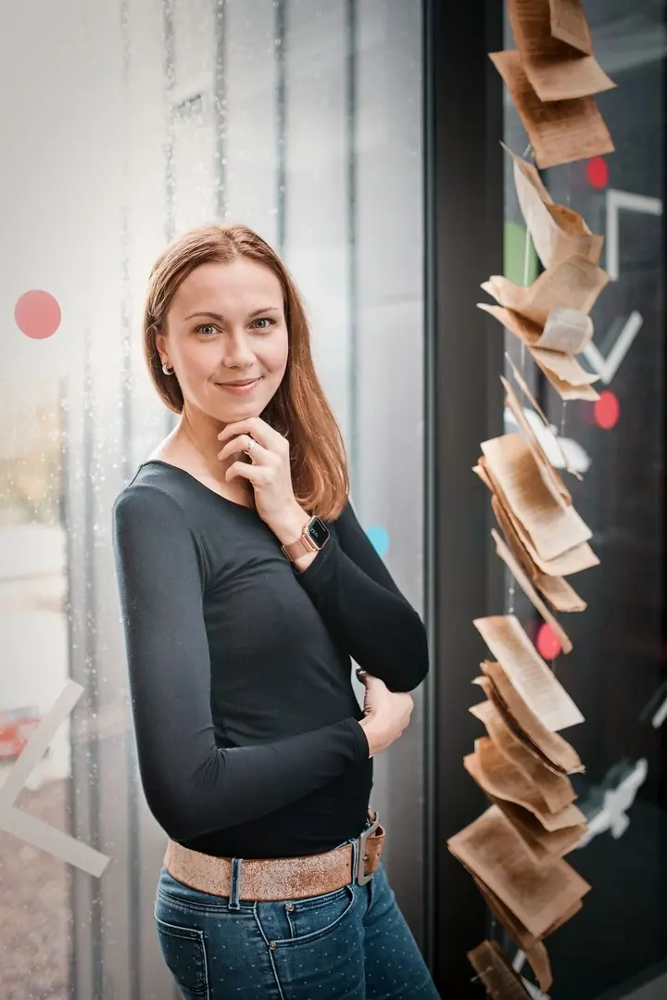
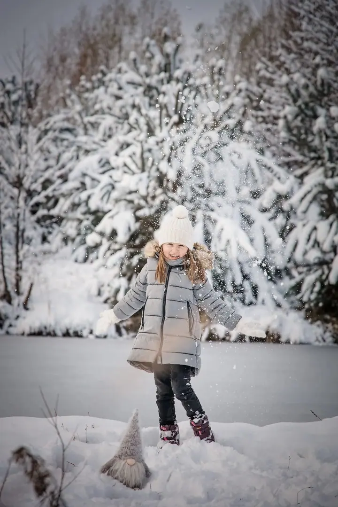
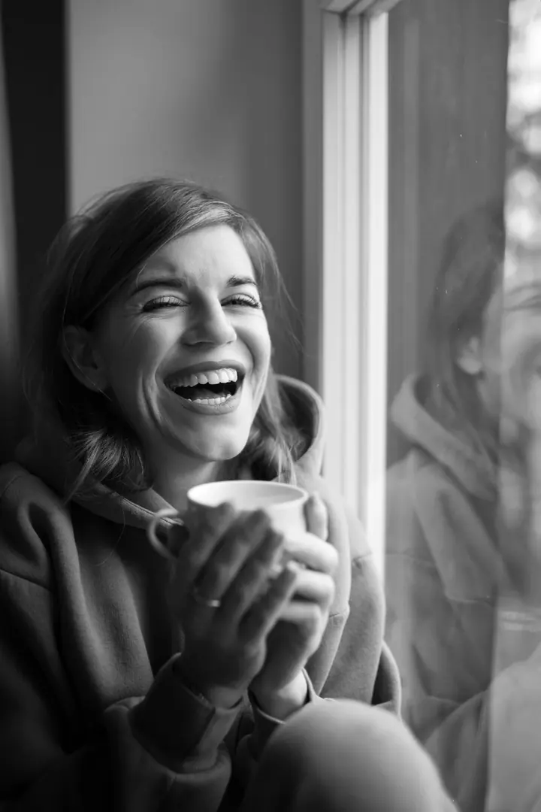
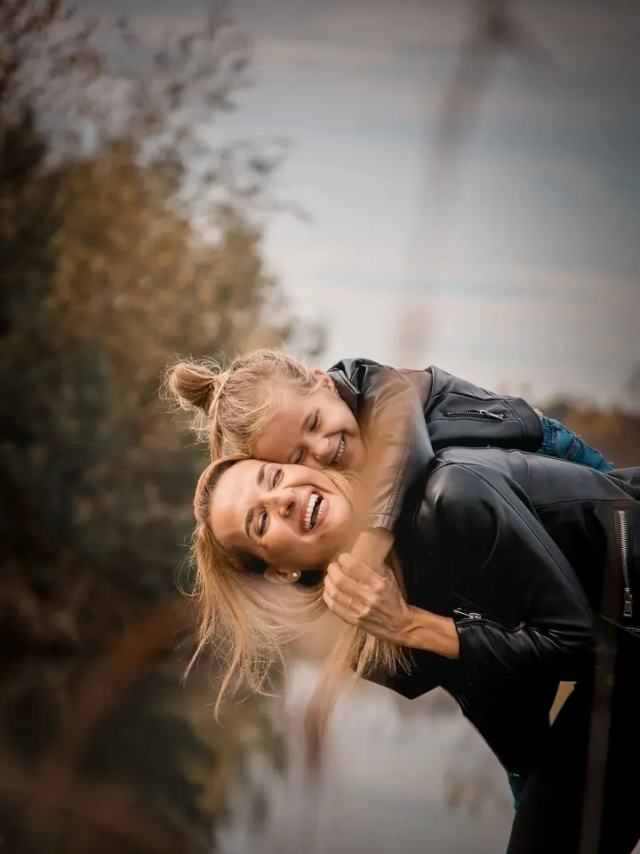
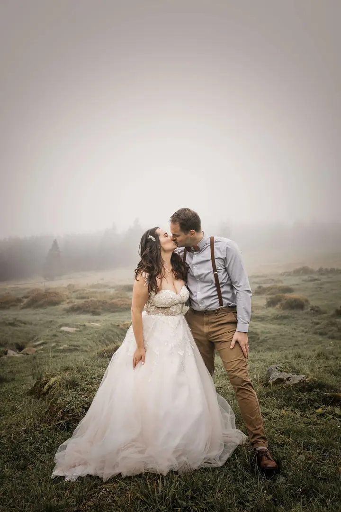
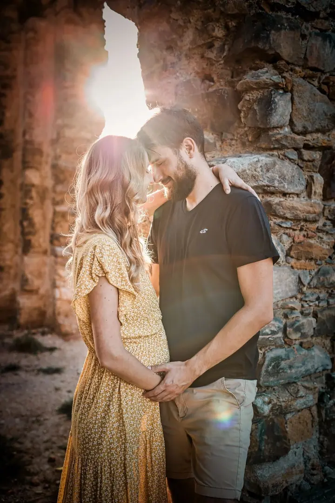
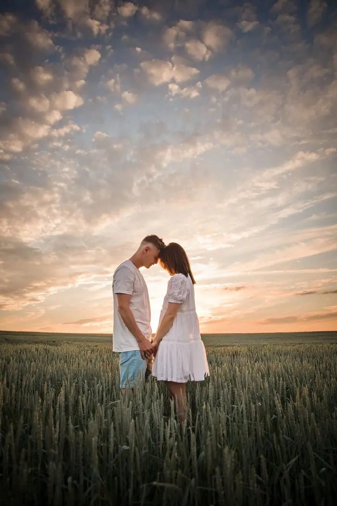
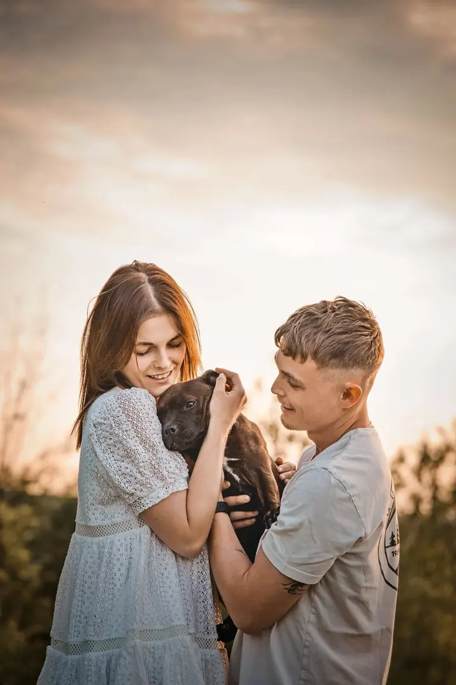
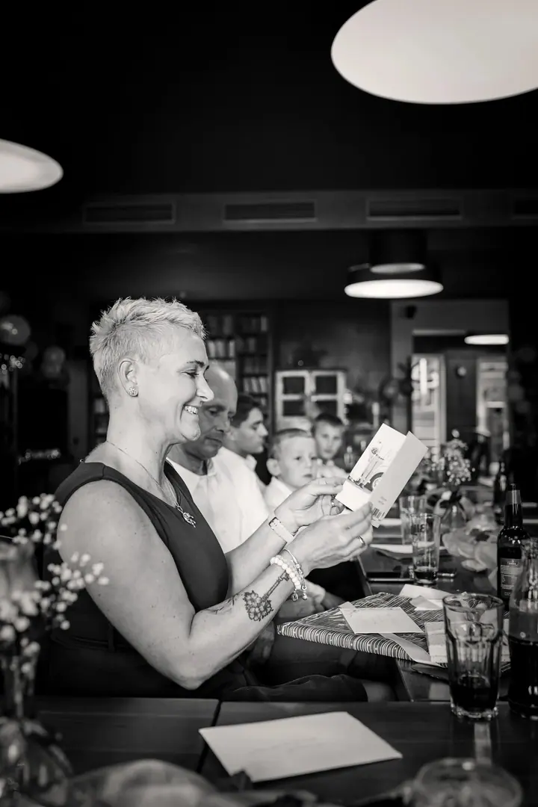

01 / 04
Brandové focení
Nebojte se zářit! Ukažte všem, kdo jste a co nabízíte. Fotky podtrhnou vaši značku a dodají vašemu podnikání autentičnost a důvěryhodnost.
Zeptat se na termín→








Fotky, které ukážou, kdo jste
Zeptat se na termín →(01) Ahoj
Jmenuji se Aňa Dušáková a jsem portrétní fotografka z Kounic u Českého Brodu. Fotím hlavně brandové fotky pro podnikatele , rodiny s dětmi a párkrát do roka i menší komorní svatby . Pracuji intuitivně a s přirozeným světlem.
(02) Co fotím
01 / 04
Nebojte se zářit! Ukažte všem, kdo jste a co nabízíte. Fotky podtrhnou vaši značku a dodají vašemu podnikání autentičnost a důvěryhodnost.
Zeptat se na termín→02 / 04
Rodinné a dětské fotografie mají neocenitelnou hodnotu, protože čas je to nejvzácnější, co máme. Litovat můžete jen fotografií, které nemáte.
Zeptat se na termín→03 / 04
Portrétní focení je o vás. Společně zachytíme vaši osobnost tak, abyste byli s fotografiemi maximálně spokojení.
Zeptat se na termín→Dále nabízím
Plánujete oslavu, vernisáž, konferenci nebo komorní svatbu? Ráda vám akci přijedu vyfotit, kamkoli po celé republice.
↗(04) Postup
Od první zprávy po hotovou galerii.
Krok 1 z 4
Napište mi nebo zavolejte, co si představujete. Společně domluvíme termín, který bude pro vaše focení ideální.
Krok 2 z 4
Před focením probereme váš záměr, styl, kde budete fotky používat, outfity i lokaci. U brandového focení myslíme i na rekvizity a prostory.
Krok 3 z 4
Začneme v klidu, třeba u kávy, a naladíme se. Pak už fotím přirozeně, s přirozeným světlem, a do póz vás případně jemně navedu.
Krok 4 z 4
Fotky pečlivě vyberu a upravím a pošlu vám je v online galerii, připravené pro web, sociální sítě nebo na zeď.
Nebojte se zářit
(05) Za objektivem
Jsem portrétní fotografka z Kounic u Prahy a fotografii jsem vystudovala jako MgA. Nejčastěji fotím brandové a business fotografie a rodinné focení, k tomu soukromé portréty a reportáže z akcí. Párkrát do roka fotím i menší komorní svatby.
Pracuji intuitivně s přirozeným světlem. Nepotřebujete nacvičené pózy ani křečovité výrazy, ráda vás navedu a zbytek nechám plynout přirozeně. Mým cílem je zachytit vaši osobnost tak, abyste byli s výslednými fotografiemi maximálně spokojení.
Kromě focení nabízím také individuální mentoring pro ty, kdo si chtějí fotky fotit a upravovat sami, a pro podnikatele umím připravit i webové stránky. Rodiny fotím hlavně v Kounicích, Českém Brodě a okolí, za brandovým a reportážním focením přijedu kamkoli po republice.
Anna
Anna Dušáková · Portrétní, rodinná a brandová fotografka
Rodinné focení hlavně v Kounicích, Českém Brodě a okolí. Portréty také v Praze a v Praze-východ. Za brandovým, reportážním a svatebním focením přijedu kamkoli po celé ČR.
Brandové focení začíná na 12 000 Kč, rodinné focení na 5 000 Kč. Reportáže z akcí počítám na poptávku podle rozsahu, ráda vám připravím cenovou nabídku.
Určitě. Nemusíte mít nacvičené pózy, ráda vás navedu. Snažím se, aby focení bylo pohodové a vy jste mohli dělat to, co je pro vás přirozené.
Ano, párkrát do roka fotím menší komorní svatby. Patří k mému reportážnímu focení a cenu vám připravím podle rozsahu dne.
(07) Kontakt
Napište pár vět o tom, co si představujete, a termín, který se vám hodí.